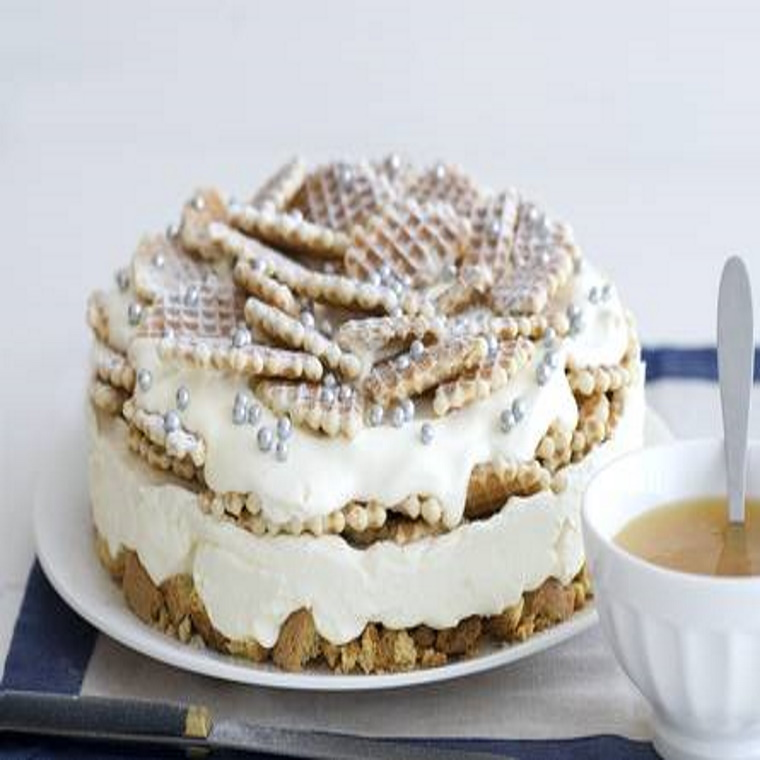

Toscaans dessert
Een geweldig gerecht recht uit Toscane. Cantuccini, amaretto, mascarpone.. veel Italianser kan het niet!
Ingrediënten
- 10 cantuccini
- 5 eetlepels amaretto likorette
- 250 milliliter verse slagroom
- 75 gram kristalsuiker
- 500 gram mascarpone
- 250 gram galette wafels
- 400 gram crème fraîche
- 2 eetlepels poedersuiker
- 21 gram zilveren parels
- 1 perssinaasappel
- 185 gram oranjemarmelade
- 3 eetlepels cointreau
Bereidingswijze
- Leg de ring van de springvorm op een groot bord. Verdeel de cantuccini in de ring en besprenkel met de helft van de amaretto.
- Klop de slagroom met de suiker en schep de rest van de amaretto hierdoor. Roer de mascarpone los en spatel dit door de slagroom. Verdeel de room over de cantuccinibodem.
- Dek af met een 2/3 van de wafels. Roer de crème fraîche los en verdeel over de wafels. Garneer met de rest van de wafels en de parels.
- Bestrooi met poedersuiker en laat 1 uur opstijven in de koelkast.
- Pers de sinaasappel uit. Verhit de marmelade en voeg sinaasappelsap en eventueel cointreau toe. Verwijder de ring en serveer koud met de warme sinaasappelsaus.

Tip Dit dessert kan een dag van tevoren bereid worden.